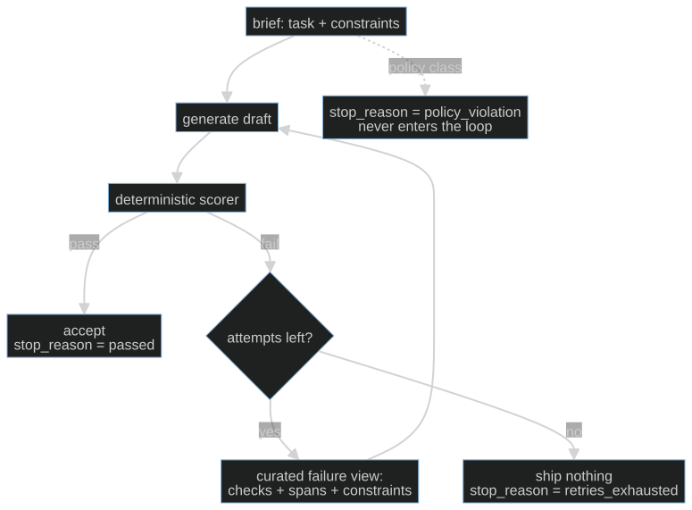

S07-repair-loop — A bounded re-ask with real feedback
Carried in: cafe/detect.py from S06 — you can now spot an unsafe, off-menu or out-of-scope
ticket before it reaches the pass.
Today you ship: cafe/repair.py — bounded regeneration when the model gets the ticket wrong.
What this teaches: why a same-context retry is a resample and not a repair, why the failure view
is an interface you design, why the cap is what turns a contradiction into an honest stop, and why
every run must end on a named stop_reason.
Time: 20–40 min active reading, 30–60 min notebook work, 5–10 min self-check.
These are planning estimates, not measured learner timings. Prerequisites: S01 (the loop),
S02 (deterministic checks and the fixture invariant), S06 (the detection layers you now feed).
Hands-on: toy.py — runs against your model.
The hook
S06 taught you to reject a bad ticket. So your shift now refuses a lot and serves nothing. Detection without repair is just a more articulate failure.
The obvious fix is "ask again". That is where people quietly ship an infinite loop, or a loop that keeps retrying a request no draft can ever satisfy — and it looks like work being done.
The promise
By the end of this session your agent re-asks with a curated view of what failed, stops at a cap you chose, and never ends in a state you cannot name. You will watch a scripted generator burn all three attempts on a spec it cannot satisfy, and end honestly with no ticket.
The theory in depth
A retry is not a resample
The tempting implementation is for attempt in range(3): draft = generate(prompt) — same context,
fresh sample. If each draft passes independently with probability p, n attempts pass with
probability 1 − (1 − p)ⁿ, which is a lottery ticket, not a repair:
| per-draft pass rate p | naive attempts | pass within cap |
|---|---|---|
| 0.50 | 3 | 0.875 |
| 0.25 | 3 | 0.578 |
| 0.05 | 3 | 0.143 |
| 0.05 | 10 | 0.401 |
Three problems. Independence is false — failures correlate, because a prompt that confused the model
once usually confuses it the same way twice — so real gains sit below the table. For rare, systematic
defects the lottery is a bad deal at any cap. And the measured result: asking a model to "check your
answer" with no external signal makes reasoning output worse, not better (Huang et al., ICLR 2024,
arXiv:2310.01798). Correction works when the feedback adds
information the first attempt lacked — which is why retry_messages appends a failure view instead
of re-sending the brief.
The failure view is an interface, so design it
If the retry is worth exactly the new information it carries, the failure view is the repair loop. The SWE-agent work made the general version of this point: feedback design — concise, localized, actionable — moved outcomes more than swapping the model (arXiv:2405.15793, §2). Your scorer's failures become prompt content, so they follow the same rules:
- Name the check that failed. One line per failure, not the whole rubric.
- Quote the offending span.
'latte' contains milkbeats "allergen problem". - State the constraint as a fix target. What a correct draft would say, not just the crime.
- Change-nothing-else framing. Without it, the model fixes the named defect and introduces a
fresh one elsewhere.
failure_viewopens with exactly that.
What stays out: the full rubric, the run's history, and any prose about how disappointed the harness is. The failure view is a diff request, not a performance review.
What the retry is allowed to see
One real design decision, and the course makes you record it. retry_messages(brief, failures,
attempt, mode) implements two modes and refuses anything else:
| mode | the retry sees | risk |
|---|---|---|
naive |
the identical brief again | resampling: burns attempts on the same mistake |
curated |
the brief plus the failure view, failed drafts dropped | the failed draft is no longer a starting point for edits |
curated is the default the loop calls. Dropping the failed drafts matters for a specific reason:
text in context is salient, and a model imitates what it can see, so a visible rejected draft tends
to return with the named detail fixed and the original defect intact. Anything that requires changing
what was asked is not a repair — it is a new request, and it goes through the front door.
The cap is the epistemics

repair_ticket loops for number in range(1, cap + 1) with CAP_DEFAULT = 3: generate, score with
score_ticket (S04's ticket contract, S06's menu data for allergens and sold-out items), and stop on
the first clean draft. Because failures correlate, the marginal attempt collapses fast: if attempt 2
fails the same check as attempt 1, attempt 4 will not save you — it will bill you. Firing the cap
is not a quality compromise, it is the mechanism that converts "unfixable within budget" into an
inspectable outcome, with the attempt log kept as the diagnosis.
Nothing ends ambiguously, and nothing ships on a lie
Every run returns a stop_reason from STOP_REASONS = {passed, retries_exhausted,
policy_violation}, and a ticket exists if and only if the reason is passed — repair_ticket
returns ticket: None in the other two cases. Downstream code keys on the reason, so a missing one
is a lie about what happened.
Some defects never enter the loop at all. _request_is_policy_blocked stops two classes before the
first generation: an injection pattern in the brief itself, and a spec where every requested item
contains the declared allergen. Both are defects in the request, and regeneration cannot fix a bad
request — it would only grow the approved scope to make a check pass.
Build (in the notebook, predict first)
Open toy.py. Same endpoint
configuration as S06 (CAFE_BASE_URL, CAFE_API_KEY, CAFE_MODEL, then cafe.doctor).
- The contradiction, scripted. The first run uses
make_scripted_generator— no model — whose three candidates all fail the ticket contract (each is missingtotal_eurandallergen_checked). Before running, predict thestop_reason, how many attempts appear in the log, and whether a ticket survives. - Every run ends with a name. A test cell asserts the reason is in
STOP_REASONS, thatticket is Noneexactly when the reason is notpassed, and that the attempt count never exceedsCAP_DEFAULT. Read those three assertions before you read the implementation. - Your turn — the failure view. Write
attempt_failure_view(failures, attempt): one short, specific line per failure. The compare cell checks that every failure is named. The reference is behind a reveal switch — flip it after you attempt. - Against your model.
make_model_generator(client)turns your endpoint into the generator andrepair_ticketruns the real loop. Predict whether your model fails the contract on attempt 1 and recovers on attempt 2, or exhausts the cap entirely. - The distribution. The checkpoint cell runs three specs and bins the results.
Checkpoint — the number you bank
Run the repair over three specs and record the attempts-to-pass distribution: how many passed on attempt 1, on 2, on 3, and how many exhausted. Write it down with the model name. It is also a budget signal — if most runs need three attempts, you are buying every order three times, and S11 will make you confront that.
State of the art (as of August 2026)
| Development | Status | Take |
|---|---|---|
| Anthropic, Building effective agents | already in this path | This session is the evaluator-optimizer workflow with a deterministic scorer. Remember the two fit criteria: clear eval criteria, and evidence that refinement helps. |
| SWE-agent: Agent-Computer Interfaces | already in this path | Feedback design beat model swaps. The failure view is the highest-leverage surface in the loop because it is an interface. |
| Huang et al., LLMs Cannot Self-Correct Reasoning Yet | already in this path | The evidence under "a retry is not a resample". Self-critique with no external signal degrades output; correction needs new information. |
| Self-Refine and Reflexion | recognize | The self-generated-feedback ancestors. They work when the critique adds signal and inherit the model's blind spots when it does not. |
| CRITIC: tool-interactive critiquing | recognize | Critique grounded in external tool output — the conceptual bridge to your scorer, which is that anchor in miniature. |
| Guardrails AI validators | adopt | On-fail reask with a bounded number of re-asks is this loop, off the shelf. Read its failure reports before chaining validators; reask costs multiply. |
| Instructor | adopt | The productized version of "validate the output, return specific errors, retry with them attached" for structured extraction. |
| OpenAI function-calling guide | adopt | Strict schemas make format defects unrepresentable instead of repairable. S04's point restated as triage: construction beats repair. |
| "Reflect on your answer and try again" prompt-only retries | ignore | Intrinsic self-correction with zero new signal, measured to degrade. The failure view exists precisely because this does not work. |
Annotated readings
- Yang et al., SWE-agent, §2. Extract: the interface design principles — feedback concise, localized, lint-like — and the headline that interface design moved outcomes more than model choice. Your failure view is an interface for one user: the generator.
- Huang et al., LLMs Cannot Self-Correct Reasoning Yet. Extract: without external feedback self-correction degrades accuracy, and earlier gains came from oracle labels — information smuggled in. This is the paper that tells you what a retry is worth.
- Anthropic, Building effective agents. Extract: the evaluator-optimizer section and its two fit criteria. Note what they do not recommend: looping without a measurable criterion.
- Shinn et al., Reflexion. Extract: what gets stored between attempts — distilled lessons, not full failed trajectories. That is the curated-context decision, made for you by someone else's measurements.
- Guardrails AI, validators. Extract: what a reask actually sends — the validator's message, re-prompted — and how the re-ask count interacts with chained validators. The productized version of your toy, costs included.
Misconceptions and failure modes
- "Retry is repair." Same-context retry is a lottery ticket with a correlation discount, and self-critique with no external signal is measured to make things worse. A retry is worth exactly the new information it carries.
- "Paste the whole rubric into the feedback." Feedback is prompt content. Name the failed checks, quote the spans, state the constraints — a wall of rubric text buries the one actionable line.
- "Keep the failed drafts visible for transparency." Visible failures anchor; the model imitates what it can see. Curate the retry context, and record that you chose to.
- "If it keeps failing, raise the cap." Attempt 2 failing the same check as attempt 1 means the defect is systematic, not unlucky. The cap firing is the diagnosis.
- "Everything is retryable." Policy violations are defects in the request, not the draft. Regeneration must never grow the approved scope to make a check pass.
- "The run ended, so something shipped." A ticket exists if and only if the reason is
passed. Anything else andticketisNone— by construction, not by convention.
Self-check
Why is a same-context retry resampling rather than repair?
Because the model faces the identical distribution: the retry carries no new information, so success is a lottery under an independence assumption that correlated failures violate. Worse, intrinsic self-critique with no external signal measurably degrades output. That is why `retry_messages` appends a failure view instead of re-sending the brief.What goes into a curated failure view, and what stays out?
In: one line per failed check, the offending span quoted, the constraint stated as a fix target, and the change-nothing-else framing `failure_view` opens with. Out: the full rubric, the run history, and the failed drafts themselves. Feedback is prompt content — an interface you design.Why must every run end with a stop_reason from a closed set?
Because downstream code keys on the reason, and the ticket biconditional depends on it: `passed` means the draft survived the scorer, `retries_exhausted` means the defect class is unfixable within budget and routes to error analysis (S10), `policy_violation` means the request was the defect. An ambiguous ending lets a failing run read as a success.Which failures never enter the repair loop, and why?
An injection in the brief, and a spec where every requested item contains the declared allergen — `_request_is_policy_blocked` returns `policy_violation` before the first generation. The defect is in the request, not the draft, so regenerating is incoherent; and a loop that could rewrite the request to satisfy a check is the bug the consent gate (S05) exists to stop.What this unlocks
Your agent can now recover from its own contract failures, and it can tell you how many attempts that cost. What it cannot do is tell you what happened: the attempt log lives and dies inside one run. S08 — Observability & replay gives the shift a memory — spans, a JSONL record of your own live session, and a replay you can prove is content-identical.